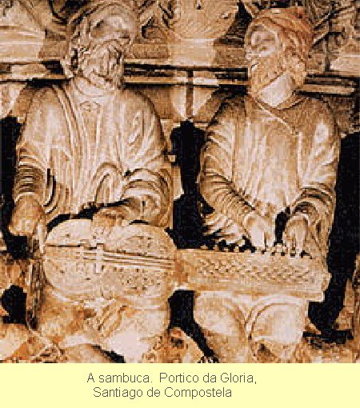
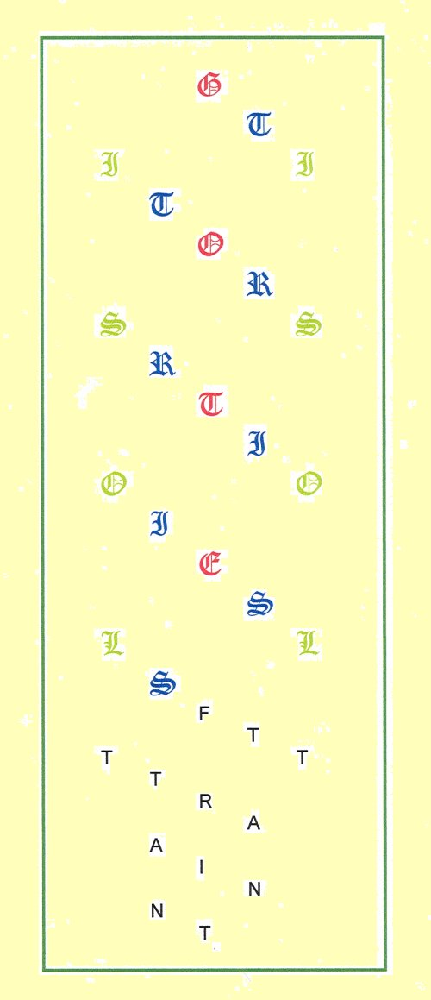

Las traducciones o
resúmenes de poemas cuya virtud fundamental es la música
son vanas y pueden ser perjudiciales,
warned Borges,
contemplating the uncanny oneirogenesis of Kubla Khan (El
Sueño de Coleridge,
Obras Completas, VIII, 26). No
one who knows Gottfried von Strassburg's unfinished cantata Tristan
(~1210) can try to replay it for an anglophone audience with an
entirely clear conscience.
Maybe it can't be done. Or if Borges was right, shouldn't. But if there's harm in trying, the perpetrator appeals to the victim:
Der guote man swaz der
in guot (line 5)
und niwan der werlt
ze guote tuot,
swer daz iht anders wan in guot
vernemen
wil, der missetuot.
Devotion to the common
good
by one who labors as he should
we ought to recognize
as good,
or we do other than we should.
Gottfried himself, of course, was translating. After a curiously admonitory address to an otherwise unknown Dieterich, he combatively validates his source, then bravuras an ancient and popular myth into verbal music, expressly and exclusively for a membership inured to normal fate. A very interesting captatio. More later as to it, the myth, and the membership.
We all translate, all the time. We must. You convert everything I broadcast, in whatever sort of language (not limited to the verbal spectrum), by whatever medium, into your own personal idiom (if you are interested at all). And if I'm singing strange harmonies—do we translate music?
When an ethnologist (I
think it was Turnbull) played recorded Mozart to jungle Africans,
they gathered to listen intently, but didn't start building viols.
One afternoon not long ago when an itinerant troupe of Cameroonian
drummers set downtown Bonn athunder, I stopped along with strollers
to admire the impact of their antic enthusiasm. They were
disappointed, I'm sure, when we (except me) failed to dance, as did
famously Gerald Durrell with the Fon of Bafut. Music may cross the
barrier of unknown tongues, if we permit, without necessarily taking
the tongue's habitat along. But when we try to make lexical sense of
splendid verse in another language, what happens to the virtud
fundamental ? Can't we take it, at least some of it, along?
It is a contradiction essential to a work of art that it
resists paraphrase and translation, and yet that it can only exist
within a language, which implies the possibility of paraphrase and
translation as a necessary condition
. –Charles Rosen, The
Classical Style, 22.
All right, first I'd better reject any concept of a systematic discontinuity between what we might distinguish as either verse or music. If you want to argue, please first go match E. H. Whinfield's scholarly recital of Omar's quatrains against Edward FitzGerald's beloved song of them. See? Or rather Hear? No, I mean feel. The difference is music.
For now, let's tour the
case before us. A. T. Hatto Englishes Gottfried's above quatrain
thus: We do wrong to receive otherwise than well what a good
man does well-meaningly and solely for our good
(Tristan,
Penguin [1960], 41.) To further alert me to its music, he could have
scored it, perhaps, as:
we
do wrong to receive
otherwise than well
what a good man does
well-
meaningly and solely for our good.
Not bad music—sturdy ictus, fun with jazzy syncopation at lines 3/4, muscular refrain—although not primarily so intended. Still, an abject nolo contendere to Gottfried's intricate rhyme and structure puzzles. Professor Hatto's aim was to put the narrative, lexical content of the story into a form most nearly incontestable for readers of English, with as little distraction as possible, supported with as much clear and compact reference as necessary. He's Gottfried's Whinfield. You should borrow his work while trying to read mine.
Rüdiger Krohn Germans:
Wer
das, was ein vortrefflicher Mann in bester Absicht
und nur zum
Wohle der Welt tut,
anders als mit Wohlwollen
aufnimmt, der
handelt unrecht. (Tristan, Reclam [1995], 11)
Krohn aims philologically, disregarding audiotonics, with facing Middle High German text (which for a modern German is about as obscure as Chaucer for you). If your German works, at least for reading, you need to have this version also (if it doesn't, abandon all hope of critical study). Besides the unfailing line-for-lineness of the gloss, it's the best compact (three vestpocket volumes) Gottfried encyclopedia available, with all the Literaturwissenschaft since that science was invented. No mean feat, this.
Narrative clarity has to
come first, of course, as far as that gets us. But Gottfried charged
Tristan with lexical, auditory, metrical, and structural
device. I am not the first scholar to fall for the notion that this
text must conceal a key of some kind. Translation has to reveal as
much of its machinery as possible. I try to save, or fake, what I
can, just a routine humiliation for such a task (The
translation—liquid Urdu turning, word by word, to English
stone,
as V. S. Naipaul put it). By no means could I reproduce
the inerrant cascade of Gottfried's rhymed couplets, only shadow
their meter (which I do slavishly, line by line). So by no means can
I claim to have translated
this anthem with all its
harmonies into a speech that uses an entirely different set of them.
But the identical-rhymed quatrains index structural units (I'll
explain in a minute), and so had to be rhymed somehow. The poet
himself bent and twisted things to make them work. That's what poets
do: take risks.
Hatto, regretting the
incalculable loss,
opts for the form which
(whatever its defects) is not intrinsically absurd—plain prose
(Tristan , 9). Rather a hard judgment on versifiers, but
fortunately his tuneful, accurate prose is far from plain. But if you
believe, as you should, that this piece belongs among the truly
great, you may wonder what you're missing. The translator knows.
Hatto cites lines 55-66:
Der werlde und diseme lebene enkumt min rede niht ebene: ir leben und minez zweient sich. ein ander werlt die meine ich, diu samet in eime herzen treit ir süeze sur, ir liebez leit, ir herzeliep, ir senede not, ir liebez leben, ir leiden tot, ir lieben tot, ir leidez leben: dem lebene si min leben ergeben, der werlt wil ich gewerldet wesen, mit ir verderben oder genesen.
which he translates as (p. 42): What I have to say does not concern that world and such a way of life; their way and mine diverge sharply. I have another world in mind which together in one heart bears its bitter-sweet, its dear sorrow, its heart's joy, its love's pain, its dear life, its sorrowful death, its dear death, its sorrowful life. To this life let my life be given, of this world let me be part, to be damned or saved with it.
When one comes to
such passages one wonders why one ever thought of translating, so
poor is the return. For the rhythm of Gottfried's verse, the music of
his rhymes binds opposites together triumphantly, strange though it
all is in logic
(Tristan, 16).
There it is. The music is what makes it make sense. Students of Bach will nod wisely. Gottfried creates here, and often throughout, a verbal equivalent, let's say, to the musical device of counterpoint, sequentially opposing dissonances to propel adjacent voices through cadences to resolution. It can't be exactly translated, but it can't be left out. I don't claim that my net yield (lines 55-68) is any better than Professor Hatto's. I have just harvested it using a different set of risks. So it should make a different kind of sense. A musical sense.
Gottfried also used
counterpoint when building his plot. In my essay The Raw and
the Cooked
(Monatshefte 76 [1984], 131-142) I charted
Tristan's binary career between repeated crash and culmination.
Conceived in despair, he has to save a crown, never mind poisoned
wounds, magic potions, palace intrigues, royal jealousy, a dragon (of
course), the dizzying hithers and thithers of heroism. Every
adventure requires cadence into wreckage, then modulation into
chorale. Often literally, to Tristan's unheard-of skill at musical
harmonization.
I think a still more profound harmonic dialectic informed Gottfried's whole purpose, a case I'll argue after some further preliminaries. The design is scalar, by which I mean implicit at every level. For example, watch Gottfried playing with the very sound and shape of his own voice (as I try to echo it), with his rhyme, from the beginning. He follows his first five quatrains in Kreuzreim (abab) with five in umarmender Reim (abba), forming a 5X5 Kreuz, bracing its symmetry with the identical rhyme, which he then caps with a cryptogram Kreuz–quatrain, framing the initial cryptogram letter with the second, so founding the most exalted feature of his poetic architecture while leading into its prime fabric, his trademark eternal cascade of perfect rhyme pairs, whither no poet, least of all such as I, can follow. In fact it's all I can do to follow what I have just said, but let's get on with it.
Technically formidable, yes. But only the beginning. It's the cryptogram (well-known to scholars) which marks the divisions of the macrostructure. Take as example lines 1751—1869. A letter of Gottfried (e.g. O) heads an identical-rhymed quatrain, followed by a short reflective or philosophical passage. Then a Tristan letter (e.g. R) heads another quatrain, an Isolt letter (e.g. S) a second meditation, then the same letter (S) the third quatrain, and finally the narration resumes with a second R (it's less confusing to see it than describe it). Ignoring these letter-and-rhyme games, as prose must, leaves a main brace out of the poem's scaffold. Gottfried teases us to take it seriously, for example, by setting Isolt atwitter at having decoded the name Tantris with literally preposterous perspicacity (10100--10122, 10598--10625). See? No minor poet, he.
This elegant back-and-forth scheme appears with less consistency as the text progresses, exposing all too regrettably the unfinished state of the work. Consider for example the identical-rhymed quatrains at 233-240, or the orphan at 11871, which seem stray where they stand, having no obvious (to me, at least) structural function at that point. I imagine the poet, ambushed during practice by inspired rhyme sets too good to waste, parking them momentarily for later use elsewhere. Other structural asymmetries abound. But enough of the system can be seen to show how the whole was intended to work, had Gottfried been able to oversee an Ausgabe letzter Hand. The same sturdy framework of alternating recitative and chorale charged the cantata da chiesa half a millenium later with its four-square, full-rigged power.
But what was the cryptogram really for? You can't hear it in recitation, the vehicle normal for literature up to Gottfried's time. It only shows up across many written folios, and then only if you have caught its first signals and are looking for it. The 13th-century reading public hardly contained a major college of philologists. Not even the scribes of the main surviving manuscripts spotted it. (Michael Batts, at the University of British Columbia, first laid it out in full detail: Gottfried von Strassburg, New York, 1971). What was Gottfried up to? I'm coming to that.
As to the poet himself, scholars hasten to admit that we know nothing about him. But no other work of his era seems so frankly confessional as does Tristan . Gottfried keeps addressing us in his own voice, with declarations, puns, asides, jokes, plus long harangues on art, religion, sex, morals, his competitors, or whatever. And don't miss the thrilling antic comedy of the dragon fight—he can do color too. But working the fine arts, languages, architecture, magic, legend, myth both classical and vernacular, and like refinements into the operation of his story, he displays an education far more liberal than was common to his fellow poets. Getting it had been no pleasure, if we can judge from the rigors Tristan suffers on the path to prodigy:
On the early blossoms of his joy 2079 fell the frost of care and trouble that makes things hard for many a youth, and wilted the flower of his joy. Amid his first freedom all his freedom was removed. With the duties of books and learning his troubles had begun in earnest (and so forth)
In this connection, a useful detail emerges when Gottfried describes how Tristan first stuns Marke's court with his musicality (lines 3505 ff.). King Marke, beginning to suspect more than meets the ear, inquires what other instruments the boy can play. Tristan tops his list with the sambjut. Nobody else has even heard of it. Exactly the effect intended. And that's the only effect intended; Tristan never plays it for us, nor is it ever mentioned again.
In Gottfried's day a superior version of the wheel-bowed viol or hurdy-gurdy, the sambuca in Italian, served in the church schools as one of the main implements for teaching music theory and performance, both vocal and instrumental. As one of the first European instruments capable of multiple voices, in design and compass it was as far above what later became its ordinary sidewalk-music counterpart as was Gottfriedian verse above street-corner doggerel. Gottfried, plainly, had been through music school, at the dawn of polyphony, and was proud of it. This fact tallies nicely with Gottfried's penchant for complex narrative structure.
As Tantris cognito , the hero takes musicianship for his cover on the perilous first voyage to Ireland. When he turns harp and song to beguiling his mortal enemies, a sophisticated trickery, Gottfried the pedant interrupts to preach sincerity as indispensable for true performance (7524 ff.), although the untutored can be taken in: Tristan's harmonious pretense has just stopped the Irish coast guard dead in the water. What bumpkins. Later, the pedant strikes a more playful note by having the girl Isolt bedazzle domestic and alien royalty with her encyclopedia of exotic musical forms (8058 ff.), learned from her tutor Tantris, with which his poet-creator, of course, had endowed him. And Tantris knows perfectly well when he must put his whole heart into his playing. He uses it to save himself from poison, by charming Queen Isolt, while at the same time, as the script calls for, initiating his ultimate destruction, by also captivating the Princess Isolt (7820 ff). Music is a dangerous thing. You must know how to handle it. None who don't need try to write classics.
The nucleus of the Tristan legend has to do with just such arcane forces. Expressed as the disruptive power of the female into the bastion of androcracy, these influences must be at least coeval with tribal chieftainship. We can retrace through retellings before Gottfried's how their power evolved from the dawn of heroism through the decadence of Hohenstaufen twilight. Gottfried says he selected, very purposefully, a correct version of it to retell, putting us on notice that he has intentions of policy beyond entertainment. In doing so he made fundamental changes.
First, he absolved the particular woman, his Isolt, from any personal malevolence by distilling the active ingredient of witchcraft into the magic dose, making it work permanently, indiscriminately, on whoever mischanced to swallow it. It's possible that Gottfried didn't invent this twist (known earlier versions let it wear off), but he used it originally. It leaves Isolt merely beautiful, but otherwise innocuous, her native state. In her un-potioned condition, for example, sheer femininity renders her unable to kill Tristan (10276-10280). Post-potion, all she can do is dodge and intrigue to survive royal justice long enough to die with him. She is not the agent of their destruction, just a component of it.
But the toxin has only been mediatized. Her mother, the Ur-Isolt, retains the full gender-specific potency of witchcraft. Her concoction wreaks disaster with archaic virulence. Bivalent as magic proverbially is, she too, and only she, not her virgin blossom daughter, has powers to resuscitate the enfeebled and disguised Tristan from impotence, no less a prerogative of witches than invoking morbidity in the first place. (Gottfried's source, Thomas, In his finale, has the dying Tristan send for the daughter Isolt to heal him. Had Gottfried made it this far, how would he have rhymed this plot discord?) On the same foundation with this atavistic contradiction rests the ornate and menacing temple of medieval minne , about which I'll have more to say later. Here it gets abstracted and enshrined, as though bottled and stoppered for eventual use as needed, or accidentially if fated. Minne, not Queen Isolt, is the destroying angel. She, with touching maternal instinct, meant no harm with her specific, claims Gottfried, only to palliate for her beloved daughter defloration by an alien monarch. Warning Brangaene how dangerous this concoction is, she drops from the free narrative tetrameter into twelve lines of compressed, anxious, triplex whisper:
Now listen, very carefully: 11451 take the drink in this vessel, keep it in your possession, guard it above all else. Make sure that on this earth no one finds out about it. Take every precaution that no one should taste it. Then comes the hard part: when Isolt and Marke have joined together for love, give them this drink as wine, and have them both partake of it.
Yes. Listen, very carefully. Behind my barbarian English is a classic vignette by a master.
While we're on the topic, a short detour, into love-death verse—your patience, please, for a bit of close work. Gottfried rounds off his prologue with the most subtle couplet in the whole poem:
ein man ein wip, ein wip ein man, 129 a man—a girl; a girl—a man. Tristan Isolt, Isolt Tristan. Tristan—Isolt; Isolt—Tristan.
Scan it. All iambic, causing Tristán/Isólt, won't do. So sing line 130 trochaic, and something remarkable happens. We get
a mán—a gírl, a gírl—a mán = \ / \ / \ / \ / Trístan—Ísolt, Ísolt—Trístan / \ / \ / \ / \
Now fit these two lines into each
other, say with a reagent—love, or sex, or strong verse—or
put them in bed together—and, dynamically, they autodestruct.
The humps and holes cancel, like interfering energy waves, or matter
against antimatter, whatever. To make this work in English I need one
syllable for wip, woman.
Wife
would be
wrong here, and most others are not nice, so girl
will
have to do. But let no reader miss these metrical physics. Sure
enough, when these two lovers fuse, it's all over. In just two
lines. 1 + 1 = 0. Or in Gottfriedspeak, Sex + Love = Death. Please
listen closely. Here is the fundamental, nuclear, musical
equation of Gottfried's Tristan.
Poison, wishes, spells, all magic, work with oracular perversity. Boilerplate. Everyone knows the story, there's no suspense, the two poor kids mistakenly take sex poison, they scandalize kingdoms, they die. How does Gottfried put new life in the old tale? Once our two ruling-class adolescents are confined on shipboard, they fall for each other to the tune of Gottfried's seductive rhymes so tenderly, inevitably, paronomastically (11985-12029) that the fearsome medicine is left with no more smack than some faint extract of red herring. A glass of good plain wine would have worked as well, and plain lust as we know it can account just fine for all that ensues. What's going on here? Ahh, that I could have watched his face and read his voice while he delivered these lines—
a virulent love-potation, 11435 designed and intended with exacting artifice to have this certain power— with whomever one should share it, that person, involuntarily, must one desire above all else, and so the other in return. To them a single death and life, a single grief and joy was given .
—this certain power— there it is. It's not in the bottle. It's in your gonads. And while we're at it, feel the crescendo from trimeter (11435-37) to the contracted four stresses in 11438, giving that line its full punch (yes, that's how it is in the source).
Now, where were we? All
right. The other change makes a bigger difference. It is in the way
Gottfried told the story. Although we can't be certain exactly how he
would have ended it, he proclaimed at the beginning his intention of
keeping faithfully to his source, written in French by a little-known
Thomas of Britain or Brittany some fifty years before. Thomas
melodramatically destroys the lovers through the perfidy of yet
another Isolt, whom the exiled Tristan married as a pale surrogate
for the real thing (I reckon all this into the binary plot cycle in
The Raw and the Cooked
). There seems little reason to
suppose Gottfried would have changed this outcome materially. It
follows his scheme of wild swings between heights and depths, while
getting nowhere, and fits exactly at the nadir of the last plunge
(Hatto translates Thomas' surviving finale, 301-353).
But in retelling it personally, ironically, magisterially, Gottfried takes possession of the myth. He turns it into a manifesto. His poem as much confesses a belief as goes in search of it. He never came back from that trek, nor have those of us who go looking for him ever found the body. Tristan is the only map we have, and exasperatingly misleading it has proved to be. Well, we have missed plenty of clues, and set out blind. How about this one?
Puzzling inconsistencies on this map come into altogether new focus if we start out supposing that Gottfried, as men with his gifts and problems sometimes are, may have been homosexual. Take Marke's first look at the boy Tristan, for example, not through Marke's eyes but through their creator's:
. . . well he knew the courtly stride. 3333 He also had the stature for it, a presence shaped by love: the mouth, full and red as any rose, bright of countenance, clear of eye, full the hair in brunette ringlets, ending in a curl . . . (and so forth),
and again when Marke is paying closer attention:
. . . when he reached for the harp, 3547 it seemed to belong in those hands, so well-formed, as I have read, that hardly could they have been finer, soft and smooth, slim but long, almost like white ermine . . . (and so forth).
The word I render here as love
;
(and more demonically elsewhere, depending on context) is Gottfried's
minne, one of the defining concepts of medieval social theory.
It encompasses romantic-sexual attraction, much stylized and
personified in the finer sorts of encounter, while always implying
the manic power to destroy that so fascinated Gottfried. But I no
longer believe that Gottfried was thinking here only in the artifices
of troubadour minne when shortly afterward Marke announces
that he has found in Tristan something he'd rather have than a wife.
On this momentous occasion, instead of giving Marke a set speech on
issues of state, which court protocol surely demanded, Gottfried has
him advertise what fun the two of them will have living together:
Come back here to me . . . 5151 . . . God knows we'll live out our days contentedly with each other . . .
A little earlier, at their first meeting, he had already specified what that would entail emotionally:
. . .Now, listen, Tristan,said the King, 3721you have all that I desire, you can do all I want, in hunting, languages, and music. We'll be companions, you and I, you mine, and I yours. By day we'll ride to the hunt, and evenings indulge here in pleasures of the court, with the harp, the fiddle, and song. What you know best, you shall do; I also know a trick or two that I expect will please you well . . .
He's a handsome, blue-blood teenager, you recall. But it won't go smoothly. Now that Tristan, newly sword-girt, can't wait to sort out feudal inequities with it, Gottfried repaints the glories of Marke's rule, all the monarchial pageantry that had so excited Riwalin, as cravenly pacifist, and casts Marke himself as literally effeminate:
But as to good King Marke, 6521 the coming trial by combat afflicted him with heartache such as no faint-hearted woman ever suffered for a man.
In a short time, Marke has fallen in love, as we would class it, with his dashing nephew, a sentiment Gottfried endorses:
Marke, having seen them off, 7370 looked long after Tristan. All his joy and peace of mind now was small, that I know. This was a parting that penetrated into his very heart and bones.
. . .that I know . . . Hmm.
Tristan's allure works not only on his uncle, but also when he tutors Isolt. After her first few lessons, she stuns all who watch and hear her performance (8106 ff.). How so?
It was plain that the lovely Isolt 8132 under Tristan's instruction had made great advances.
I think I catch a whiff of corruption here. The king is soon showing off his prize consort to his familiars at court. With the girl's precocity in beginning to absorb potent crafts, Gottfried is setting up her coming role of torpedoing the masculine bond Marke hoped to make with Tristan. He wants to let the bedrock of primal myth show through courtly refinements. The modern triumvirate of king, priest (the Bishop of Thamise), and stalwart kinsman is going to fall to the archaic magic of a triplex reflection of Isolts (mother, princess, and the pale White-hands) just as the fatal attractions of a sorceress had unmanned the archetypal warrior-chieftan in the age of heroes. Magic rules. Sorry if this sends you off toward Robert Graves, chasing mysticoreligious triunes, but that's the way to go, cautiously.
Before you dismiss such readings as slanted, recall that Gottfried warned us at the very outset against forcing all too conventional a construction onto his story:
It's not that common world I speak of. . . (50) . . .To [your] world and the one I live in, what I say means different things--
He insists, rather, that without the right tilt, we shall entirely miss the point. The implications multiply when we assume that Gottfried's views were colored by his particular gender orientation. All this is connected somehow, intimately, with his allegiance to a special congregation, the famously enigmatic Noble Hearts.
What defines them? Gottfried reads us their credo in a daring see-saw ballad of incongruous opposites, condensable essentially into life versus death (45 ff). A stoic elite inhabit a world that is prepared to integrate death into life, pain into joy. While dedicating himself irrevocably to fellow citizenship with them, he undertakes to palliate the anguish of such drastic conflation by means of his work itself , a poetic history of yearning. This stated ambition will have much to do with how I assess his accomplishment.
His pronouncement falls into two broad parts, both programmatic for Tristan: it is intended exclusively for that elite, among whom he belongs, who accept death; and the remedy for that calamity shall be art. This passage (45-130) begins a proof of the proposed therapy with unparalleled melodious sentience.
How extraordinary. Not a word about the Christian machinery universal in his world for obviating death. Exactly at the obligatory juncture for fervent piety. Note too that in paraphrasing Hartman as his model (below), Gottfried leaves the God clause out entirely. He changes the beneficiary to his Noble Hearts club. More extraordinary: nowhere in this tour de force on sex and death is there an even marginally pious appeal to divine salvation (well, Tristan's foster parents are tenderly sent to heaven in lines 18660-69). To infallible judgment, yes, over and over, including a notorious, ironic dismissal precisely of that (15733 ff.) To remission in paradise, never. How extraordinary! I think we have here a case of what Claude Leví-Strauss would have generalized as a structural parallelogram, a way of organizing experience or phenomena into bipolar categories typical of but widespread not only among preliterate societies:
[ faith – death = life ] [ noble hearts + death = art ]
When death is positive, the equation describes the cosmos of Tristan. However homosexuality may be defined, those who—let's say—practice it, accept death in the sense of renouncing the physical perpetuation of life. They will leave no offspring. They also accept (we're in the Middle Ages here, you recall) a minority role condemned and often bitterly persecuted by those devoted to the system described in the first, death-negative formula. Such boundary conditions plainly imply a nobility of heart and total reliance on some kind of exogenous solace, which Gottfried aspires to supply, as art. Furthermore, uncoupling sex from its one sanctifying function leaves it a moral loose cannon, the destructive rampages of which Gottfried tragico-lustily chronicles.
As to cracked weapons,
thigh wounds, impotence, masquerade, and their poetic encryptions, I
have already said quite enough about Gottfried's sword-phallicity in
The Raw and the Cooked.
Now I have to put bigger issues,
the literary ones, in context.
Among his contemporaries, Gottfried admired Hartmann von Aue (1165-1215?) for his lucid style. In his program of creating therapeutic art by translating from the classics, Gottfried was following Hartmann's example, set forth in the pious legend Der arme Heinrich (before 1197):
Hartmann: There was a knight so learned that in many books he read whatever he found written there. This man's name was Hartmann, serving the court at Ouwe. He searched here and there through various books. It was his hope in doing so that he might find something to relieve the burden 10 of difficult hours which would also be such as to show reverence for God, and in this way be able to render a pleasing service.
Gottfried:
I have searched . . . everywhere, 157
in all the books, of both kinds,
Latin and not Latin,
and taken the greatest care and trouble
in writing this poem
to follow his [sc. Thomas'] example.
After much searching,
at last in one book
I read all that he has said
about how this adventure goes.
And now from all my reading there
about this history of longing,
I have chosen to present
the tale to all noble hearts
as a pleasure and diversion.
Hartmann tells how the noble lord Heinrich, stricken with leprosy, learns that only sacrifice of a pure maiden can heal him. A peasant's daughter, zealous for eternal bliss, volunteers. Strapped naked to the altar, she is about to be sliced up by the physician-priest when Heinrich peeks through the keyhole and halts the procedure out of compassion (at first much to the girl's pious annoyance), whereupon, of course, all goes happily ever after.
Gottfried adopted the style and program, and even the scene, but not the ending. He has the afflicted Marke peer through a little window in the sex cave on the lovers' pose of mock innocence, which convinces him to rescind their banishment. The entire act can be read (I do so read it) as a travesty on Hartmann's pious dénouement. Far from being redeemed, Marke has yet more with which to fool himself. Gottfried sourly observes that he is better off to do so:
And he does just as great an evil 13797 who tries to turn suspicion and confusion into certainty, for if he should succeed in confirming every doubt, then that which he before aspired to get to the bottom of has become a painful thing for him, beyond every heartbreak. Those two he started with that at the time oppressed him now seem the better evils. Might he have them restored, doubt and illusion at least could make it forever impossible to know the real truth.
And what does Marke see through that
spyhole into the cave? There lies the man he at first loved, for whom
he swore political celibacy, next to the woman, his intended dynastic
solution, neither of whom he ever really possessed. Maybe for us, the
audience, their accidental poisoning could to some extent excuse
them, but Marke, the protagonist, doesn't know this. Peeking
at them, he works up quite some carnal steam for his female consort
(17587-607). Gotttfried puts his own spin on this primal scene: Isolt
glows with color and radiance, lovely and enticing (and so
forth) . . . I know not from what exercise, told somehere in this
story.
Oho, we wink, sword or no, what have they been
doing in that love cave? The sovereign author deflates us with a
gentle poke in the ribs: I do know, come to think of it, how
she had exerted herself
— just an early morning stroll.
It was the walk that warmed her
(17561-74). Not what you
were thinking, at all. But overwhelming desire, the same stuff as in
the fateful cocktail that has put the lovers there, convinces Marke
to exonerate Isolt. Honi soit qui mal y pense. We soon find
out (17723-33) that he also has political concerns. He needs to
parade her as queen, even though no heir is forthcoming,
although that was the whole point from the beginning. Gottfried
throughout mocks the issue of Marke's succession, the plot feint used
to instigate these misalliances, by leaving Isolt barren despite
vigorous couplings with both king and nephew. Red-blooded, potent
Hartmann would have toppled off his charger at such diagnosis.
From Hartmann's exemplary diction in his setting of the Job legend, Gottfried adopted the idea that purity of verse could cleanse even what sensuality may soil, impliying a kind of salvation in itself, which he generalized into the infallible mirror accuracy of his own rhyme. Art can lead to surcease. But he passed over his model's trite preciousness to vent his scorn on a case of it made inexcusable by its author's turgid diction and plot. This poet, whom Gottfried disdains to name (he can be no other than the Wolfram von Eschenbach of Parzival), had been going about declaiming a wild tale. If asked for a précis of it, Gottfried might have said: a young worthy, ignorant both of his high parentage and codes of noble behavior, rampages about defeating all and any who stand against him. Revelation and wisdom gradually seep in through hard knocks and wise counsel, so that at last he gains control of a magic grail-stone residing in its hidden castle, where healing, conjugal bliss, and dynastic sovereignty unite in an enlightened rule dedicated forever to propagating its pax abroad.
Bickelworte ,
snorted Gottfried (4641). Balderdash. He was himself composing a work
that would set all that bliss and health nonsense straight, for a
select coterie who could stand to face the truth. He was taking the
facts straight from an authoritative source, instead of fabricating
at will and then at the last moment citing (as did Wolfram) an
exotic, unheard-of masterwork. As for that imaginary fortress of joy,
Gottfried said, he knew all about it. He
had been there. He
had known it since he was ten years old (17100ff.). But it wasn't the
answer. His fictional lovers get to stay there briefly, while over
them hangs, as a species of Gottfriedian bliss, a sterile melancholy.
Daily in fear of being discovered, they rehearse ancient incest
legends, of liaisons inappeasably forbidden and tragic, case
histories of carnal lust transgressing natural law (detailed in The
Raw and the Cooked
). They are able to ascend the crystal
monolith and lie there pretending
impunity, but he, their creator, try
as he might, has no such luck. He can't penetrate the screen, as does
Woody Allen's ingenue in The
Purple Rose of Cairo.
He had been there? What
are we to make of this? Let's backtrack to my speculations about
Gottfried's early life and education. Among them, Gottfried's one
portrayal of genuine, familial warmth centers on Tristan's foster
parents, the stalwart Rual, and his surrogate mother, Floraete
(3750-4332; see my Rual der Werde,
Neophilologus,
68 [1984], 400-404). Maybe Gottfried, like Tristan, was born of noble
parents in suspect union (later sources deny him the title her,
Sir
), which landed him, like Tristan, with foster
parents. It would then be no surprise, in fact routine, that when
maturity threatened he should be interned in a monastic institution
for a career ecclesiastical rather than feudal. There he could live,
and receive literary and musical education, in a sequestered, sylvan
environment summarized in architectural splendor, music, art,
letters, and very probably a conflict of sexual license restrained by
occasional, irksome surveillance.
Monasteries (Gottfried
four times calls the lovers' retreat a cluse, cloister
)
insulate devotees of spirituality, heightened by art, from temporal
corruptions, such as sex, which, as we Darwinians know, is nature's
way of perpetuating life. But what about intrinsically sterile sex?
Could it qualify as a kind of abstinence, or at least as
philosophically benign? Now, in the fossiure a la gent amant
(surely a wicked pun), which theoretically sheltered Gottfried's
lovers, as for the Titans, from restrictions on pleasures, they
commemorate classic incestuous passions, the strictest of
prohibitions on intersexuality, in the most soothingly melodious
harmonizations. Need of physical sustenance is also suspended
(although Tristan had brought gold, presumably against such needs).
They have perforce left the standard world, to enjoy—or
endure?— a metaphysical one. Asceticism, abstinence, sylvan
idyll, retreat, song, revered tradition, all deployed in a desperate
situation. Sex, hunger, reality as we know it, forestalled. There
was a time, Gottfried remarks, when I myself/ lived in just
this way,/ and then it was enough for me (16920f.). How shall we
read so peculiar a confession?
Here a short detour,
which I trust merges with the thoroughfare. Gottfried set himself off
from his fellow poets most distinctly by his fathomless irony. One
capital instance will suffice, not to sidetrack the argument too
long. Isolt, facing a drastic test of her chastity, reminds God of
his courtliness
(höfscheit, 15552), his class
obligation to be a good sport about the trick she is inventing. She
contrives to land as though by mishap in the disguised Tristan's
arms, so that she can include him in her oath listing the only men
she has ever lain with. Calling off her bodyguard as she falls, she
jokes,
would it not be very strange 15613 if this man, on pilgrimage, wanted to have fun with me?
This powerful remark, bursting in the midst of her trial on charges of royal adultery, has so many levels, like the ruins of Troy, that we know not how deep lie hidden Priam's glories. They shine throughout the heap. When Isolt reaches into the fire, we watch the dramatic climax of the whole story (exactly at the word not [=niht] in line 15732). But Marke and his jury don't know what they have just seen. While we all hang, wondering what next, Gottfried in persona strolls onto the proscenium (15733ff.) to remark that Christ, as divine chief executive, can be persuaded even to suspend physics, if that is what you really want. I doubt there is another scene anywhere in medieval letters to equal this one for sheer dramatic force. Is Gottfried's Eden-Märchen in fact a bitter parody? Be warned.
There was a time . . . Gottfried muses. But no more. The lovers, when Marke recalls them, simply leave their paradise, without a word of regret or foreboding, for the real world of intrigue, judgment, and condemnation. In doing so they reconstitute themselves as mortal humanity. Gottfried is telling us here that he went with them, leaving the uncanny dimension that pertains in the love cave, his most poetic of fictions, to reality, where hunger, unsatisfied yearning, sex, and death define life as we know it, and all have to be accepted somehow. His expedition to the central bastion of purity, like an assault on the Castle of the Holy Grail, fell short. All the machinery of ritual and abstinence turned out to be no match for the flame-sworded cherubim that forbid us the Tree of Life. There would be for him no joyous tandem nuptials in some hard-won, post-conquest reign of enlightenment, no magic stone or cup of healing, no love, such as perfumes the happily-ever-after of Parzival's sublime reign. So what was left?
The one thing he still believed in: cristalliniu wortelin (4629).
A block of crystal, however elegantly wrought, seems a hard, cold place for epic lovemaking. With its engraved dedications, situate by architectural geometry at the focus of a perfectly smooth, white, monolithic, otherwise unfurnished cavern, displaying for targeted spectators an arfully composed tableau vivant unmistakably like tomb effigy, it is a bed in the sense of that furniture's most transcendent metaphor, the sarcophagus, and the temple-like hypogeum enclosing it a mausoleum, the hidden park-like glade in which the whole is sequestered a cemetery, not for re-creation but eternally unchanging and commemorative. And whose bones shall lie there?
What Gottfried enshrines
has to do with his own inability to attain either ascetic salvation
in monastic retreat or a substitute for it in the supernal carnality
which he so tenderly allows his fictional lovers to celebrate,
briefly, in their isolation, who surpass, he declares, even the
amours of the Titans (17225ff.). The undertone of his personal
failure drones throughout the story, culminating in the episode I
entitle Eden,
with all its connotation of catastrophic
loss. And in his famously enigmantic prologue I hear him addressing a
monument of ironic acerbity to a person he knew intimately, but whom
we know only as DIETERICH.
It is the poem, precisely the poem, that rises to immortality. Approaching the dénouement of his plot, Gottfried had begun to chisel across the crystalline surface of his story a coffin-shaped epitaph marmore perennius, in the center of which, just where Tristan had laid that awful sword awarded him by his uncle as the emblem of manhood, with which he murdered the first nobleman to impugn his legitimacy, a two-edged thing which when broken betrayed, then when repaired, united him to Isolt, which at last feigned but failed to prove their abstinence, announcing instead with its shining nakedness their utter capitulation to mortal sexuality—at that center, now replacing the sword, Gottfried himself, Gottfried the now immortal poet, would lie, reconciling himself for all time with his creations beside him, each in mirror image, like flawless verse:
